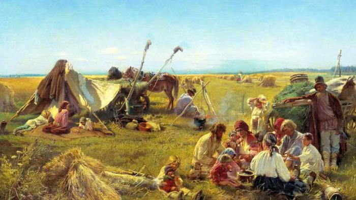
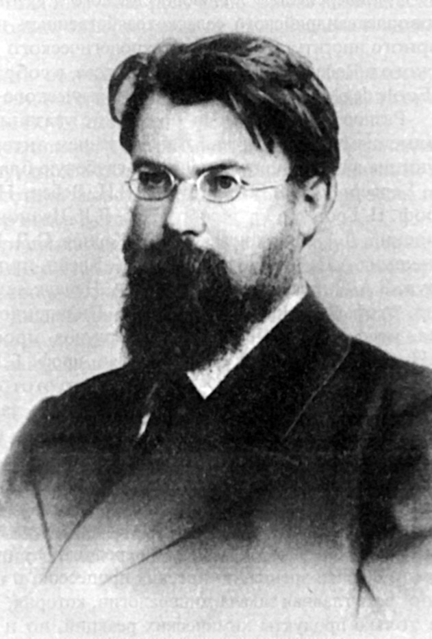
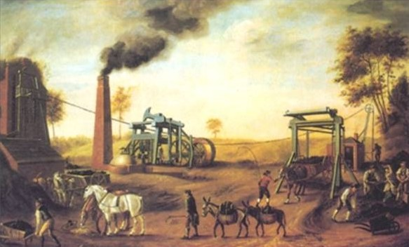
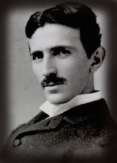
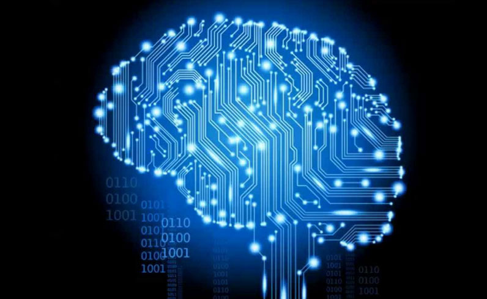

Етика відносин "людина - природа"
в традиційному суспільстві

Людина, прийшовши в цей світ, крок за кроком пізнає його багатство й розмаїття, що власне й становить сенс людського буття. Значною мірою розмаїттю довкілля ми завдячуємо живій природі, адже саме внаслідок тривалої природної еволюції сформувалася різноманітність рослинного й тваринного світу.
Щоб жити й виживати у природі, людина навчилася використовувати корисні властивості компонентів біорозмаїття для отримання продуктів харчування, сировини для виготовлення одягу, знарядь праці, будівництва житла, енергоносіїв. Впродовж історії людина навчилася не лише виживати у протистоянні природі, а й шанувати природу, заощадливо використовувати її ресурси, передаючи цей досвід у спадок від однієї генерації до іншої.

Володи́мир Іва́нович Верна́дський — російський, український та радянський науковець і філософ. Природознавець, засновник геохімії, біогеохімії та радіогеології, вчення про біосферу, ноосферу, космізм. Академік Імператорської Академії наук. Професор Московського університету (від 1898).
Один із засновників Української академії наук, її дійсний член (від 1918) та перший голова-президент (від 01.01.1919 до 31.12.1921).
Етика відносин "людина - природа"
в індустріальному суспільстві

Наступ індустріальної епохи у взаєминах людини і природи прийнято пов'язувати з перемогою і остаточним затвердженням у другій половині XVIII ст. капіталістичного способу виробництва. У цей час виникає і починає швидко розвиватися велика машинна індустрія. Основою нової форми організації суспільного виробництва стала капіталістична фабрика.
Характерною рисою техніки цього періоду стало винайдення і поширення в основних галузях промисловості (текстильної та машинобудівної) і сільського господарства робочих машин. Застосування механічного ткацького верстата, парового двигуна, сільськогосподарських машин (парового плуга, механічних сівалок, жнивних машин) призвело до різкого збільшення промислового і сільськогосподарського виробництва.

Ні́кола Те́сла — сербський та американський винахідник і фізик. Походив із сербської сім'ї, згодом став громадянином США. Тесла найбільш відомий своїми винаходами у галузі електрики, магнетизму та електротехніки. Зокрема йому належать винаходи змінного струму, поліфазової системи і т.д.
Етика відносин "людина - природа"
в інформаційному суспільстві

У нинішньому столітті вирішальне значення для економічного і соціального життя, для способів виробництва знання, а також для характеру трудової діяльності людини набуває становлення нового соціального устрою, заснованого на телекомунікаціях. Три аспекти постіндустріального суспільства особливо важливі для розуміння телекомунікаційної революції:
– перехід від постіндустріального суспільства до сервісного суспільства;
– вирішальне значення кодифікованого теоретичного знання для здійснення технологічних інновацій;
– перетворення "інтелектуальної технології" на ключовий інструмент системного аналізу в теорії прийняття рішень.

Ілон Рів Маск; нар. 28 червня 1971, Преторія, ПАР — інженер, підприємець, винахідник, інвестор, мільярдер. Засновник компаній SpaceX, PayPal, Neuralink і The Boring Company, головний дизайнер, генеральний директор і голова ради директорів Tesla Inc., що керує заводом Tesla


380-66-666-66

вул. Співдружності 92А
місто Кривий-Ріг